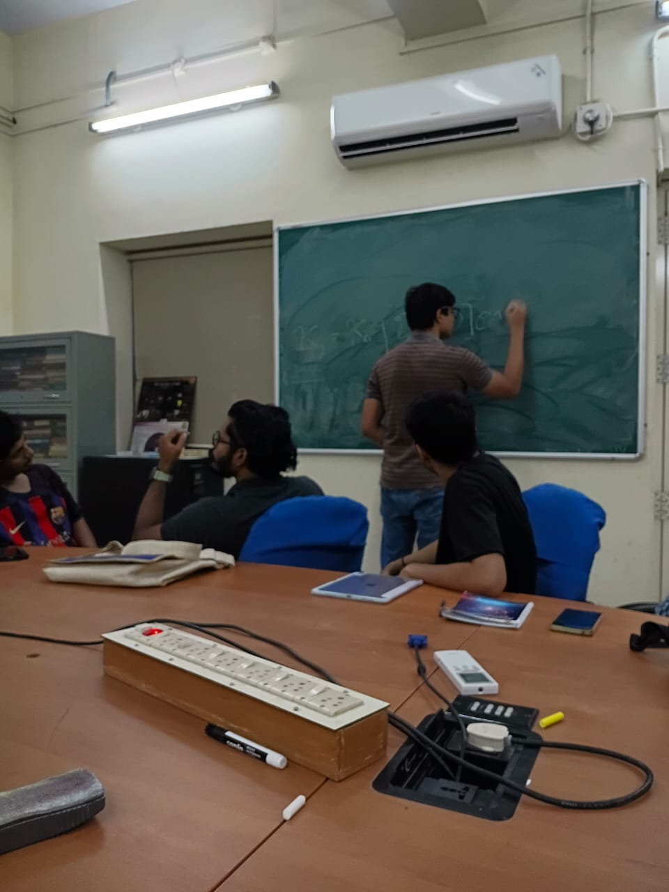
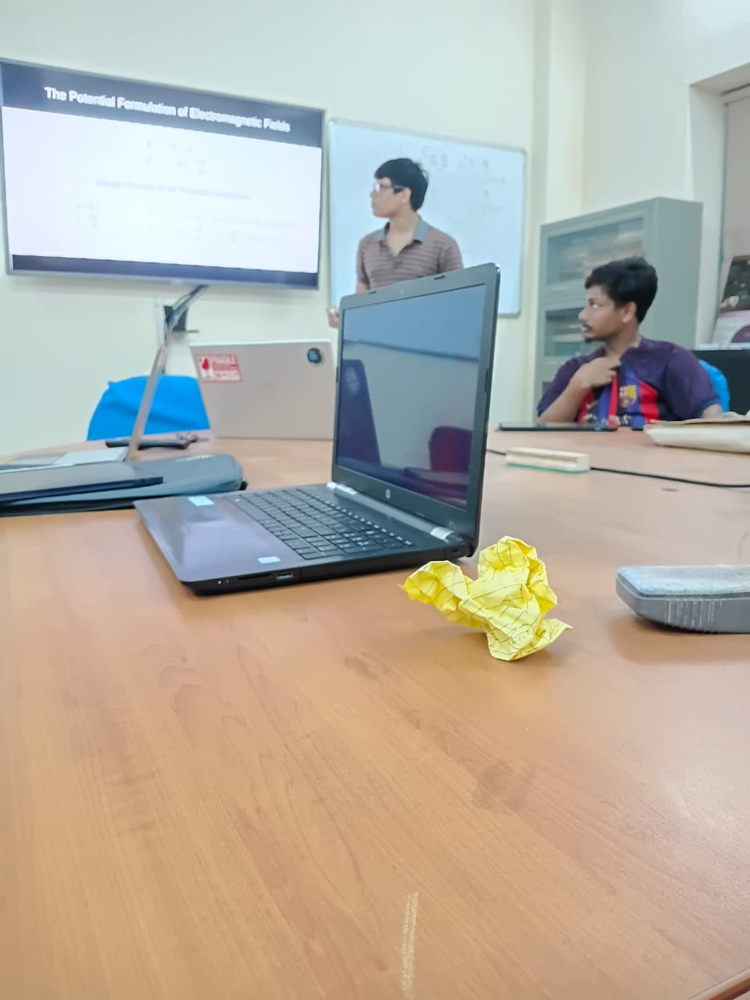

Summer Intern Project
Aharonov-Bohm Effect & Non-Local Behaviour
01. Overview & Learnings
During this internship, I worked under Professor Vaibhav Madhok as part of the Quantum Information Research Group on the Aharonov Bohm Effect. The Aharonov-Bohm Effect reveals a non-local, gauge invariant result in quantum mechanics where electromagnetic potentials affect phase shifts in charged particles in field free regions.
In particular, I studied the arguments piut forth by Lev. Vaidman in his 2012 paper. This work attempts to localize the Aharonov-Bohm effect by quantizing the source of the (electrical or magnetic) field and potential and entangling these quanta with the charged particles.
Key Learnings
- Introduction to Feynman's Path Integral Formulation of quantum mechanics.
- Introduction of the auxillary potential function formulation of electromagnetism.
- Understood the topological nature of the AB phase shift.
- Modeled the entanglement between a probe particle and a macroscopic system to observe phase kickbacks.
02. Resources & Links
03. Gallery


Presenting my project to the Quantum Information Research Group